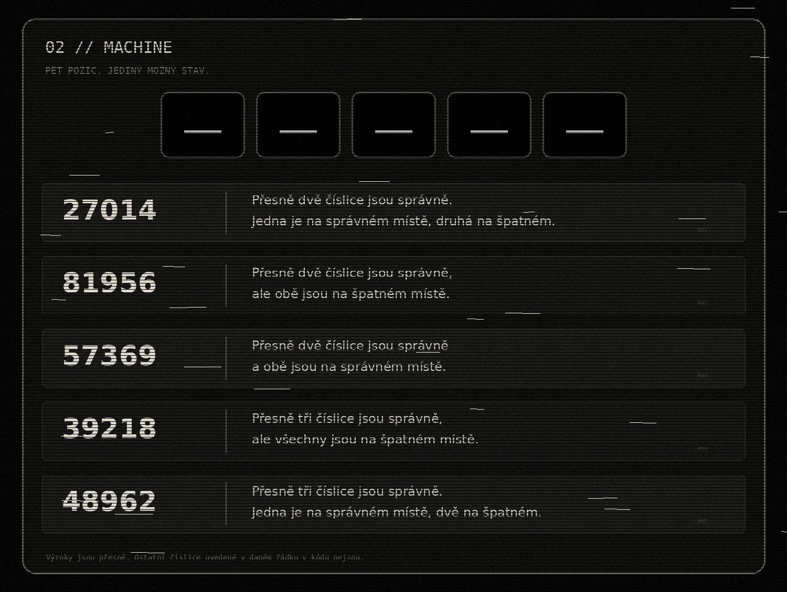

cryptic playground
by Alza.czOBSERVE / THINK / CONNECT / SOLVE
02 // LOGIC
MACHINE
Pět pozic. Každý řádek je přesná informace o stejném kódu. Teprve všechny stopy dohromady nechají jedinou možnost.
← BACK
tap / click to inspect full resolution
Není tu tlačítko „ověřit“. Výsledek si odnes s sebou.